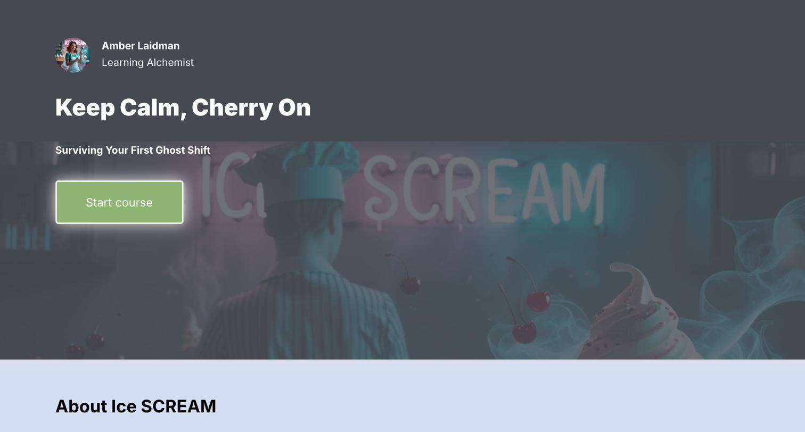

A five-minute onboarding course built solo for the IDLance × Parta.io Design Challenge — with a full narrative world, an original method, and ghost coworkers named Margaret.

The IDLance × Parta.io Design Challenge asked instructional designers to build a story-driven course in Parta.io — built on the belief that most onboarding is forgettable because it treats new hires like paperwork to be processed instead of humans about to walk into an unfamiliar world.
I took that seriously. Most workplace onboarding I've seen (and built earlier in my career) focuses on the policies, the tools, and the "here's your parking pass" logistics. What it usually skips is the emotional truth of a first day: you don't know anyone, you don't know how things work, and every small decision feels like it might be the wrong one.
I wanted to build something that captured that feeling — but made it fun instead of anxious. The result: Ice SCREAM, a boardwalk ice cream shop where the ghosts have been on staff longer than the humans, and where a new hire's real challenge isn't scooping technique. It's staying calm when a translucent coworker asks for a spoon.
Story-driven learning is easy to say and hard to actually build. The trap is a course that has story on top of content — a fun intro, a themed background, and then the same bulleted policies you'd have found on a wiki. The story stops working the moment the content starts.
I wanted the story to be the content. So I built a full narrative world: Ice SCREAM as a real place with a real history (since 1866), staffed by named characters (Chelsea the Wistful, Margaret the All-Knowing, Gary the Caffeinated Poltergeist), each with backstory and role. Chelsea narrates the learner's first shift as their assigned mentor. Margaret is invoked constantly but rarely seen. Fictional employee testimonials appear throughout with fun facts that never break character.
The instructional spine is the S.C.R.E.A.M. method — an original framework I built for the course. Six steps for surviving your first ghost shift: Stop & Scoop, Count to Four, Recall the Rules, Eyeball Check, Ask a Floaty for Help, Make the Sundae. Each step is a real de-escalation and composure technique wrapped in the world's language. Interactive flip cards let learners explore each step at their own pace, then apply them in narrative practice scenarios with in-character feedback.
The whole course was built end-to-end in Parta.io — the platform hosting the design challenge. Imagery was generated with Canva AI, keeping a consistent teal-tinted photorealistic style across all visuals. Script development and world-building leaned on ChatGPT as a thinking partner. Accessibility was built in from the start: keyboard navigation, screen reader compatibility, image descriptions, and an explicit accessibility mode note on the intro page.
The biggest lesson: when the story does the teaching, optional becomes appealing. The flip cards weren't required. Making them a discoverable part of the world — rather than a checkbox — was a deliberate design choice, betting that curiosity would do more work than compliance.
What I'd do differently: add branching. The current course is a linear narrative with practice moments, which works for a five-minute submission. But the world could support genuine branching — different ghost coworkers, different customer scenarios, different endings — and that's where a longer-form version would go next. Parta.io's platform can support it; the constraint was scope for a contest deadline, not capability.
Ice SCREAM was awarded first place in the IDLance × Parta.io Design Challenge. The prize was a one-year Parta.io license — genuinely useful, since I've now got a platform I want to build more in.